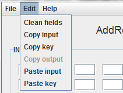

From this window we can test the functioning of the SubBytes operation, during which a non linear substitution is performed in which each byte is replaced with another one in correspondence with a search table.
In the input field we can fill in each cell of the matrix as a pair of hexadecimal values. To enter these values we can do it manually, pasting the content from the clipboard or generating a random matrix by pressing the "Random" button.

By pressing the button "Run" it will be verified that all values are correct and will perform the transformation if so.
By pressing the "Back" button we return to the operations window.
From the "Edit" menu we can access different actions relative to the copy and paste operations of the matrices.
For a more detailed information about the functioning of the SubBytes process, please see:
SubBytes explanation